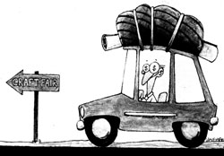
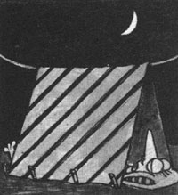
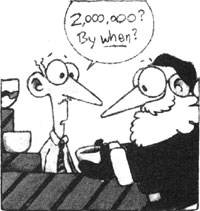
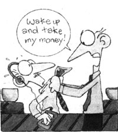

Cashing in on the crafts circuit can be voth profitable and fun when you approach...
Selling handicrafts on a show circuit is not a lifestyle for those who get shaky if the pay-check isn't the same every month. But for people who crave independence, thrive on variety, prefer to work at home, and have some capacity for self-discipline, it's an ideal way to earn a living.
Best of all, trying out craft-show selling can be as simple as setting up a card table at a flea market. However, turning that simple beginning into a small business that will support you will take a good bit more planning.
To test your product's popularity, think modest. Make enough items to gross between $300 and $500-but not so many that you'll be desperate to dump your merchandise if the show's a flop. This isn't negative thinking; there's just no way to outguess the buying public.
Pick a show with a fee of $50 or less for a two-day event. And spend almost nothing on a booth: Two borrowed card tables extended with a plywood top covered with some colored sheets or tablecloths will do. Use boxes to vary the display height and two stepladders with boards stretched across to create shelves. If the event is outdoors, a patio umbrella will do fine for shade (otherwise, take along plenty of sunscreen).
At the test show, keep track of items sold and their prices. If your luck is poor or so-so ($100 to $200 gross for two days), sign up for another one that's entirely different. For example, if you tried a street fair or festival that sold crafts as an afterthought, choose an event that's strictly arts and crafts or one that is likely to draw an entirely different crowd.
Good shows fill up fast, so a newcomer may not get into the best ones. Even so, you'll get a feel for the popularity of your handcrafted items after two or three shows. Keep an eye on how well other craftspeople are selling, and compare. If the show is slow only for you, re-examine your craft with a dispassionate eye. The fun seeps out fast if you're reduced to taking naps and reading magazines while those around you are making change.
In addition to capital outlays and material costs, making and selling crafts involves a number of other expenses. First, there are show fees. Space rentals can vary from $15 for a two-day street fair to $250 for an inside show at a plush convention center. (Some promoters collect 10% to 20% of your gross sales as part of the show fee.) It's entirely possible that the first type of show will outsell the latter. On the other hand, you may have to do three small shows to equal the revenue you take in at one high-fee, three-day event.
To avoid paying for accommodations while on the road, many full-time crafters pull trailers or travel in motor homes (promoters often provide free places in the parking lot for overnighters). Others hunt for mom-and-pop motels that charge under $30 a night or board with a network of friends and relatives.
Working the show circuit most often means eating out. (Of course, you can bring a cooler of food from home.) Vehicle expenses are another recurring cost, and since 80070 of serious craft-show sellers have vans, gas costs mount up. All expenses, however, are tax deductible.
Overhead expenses also include such capital investments as tools, tables, special lights, equipment, and protective clothing. (Figure in the cost of repairing and replacing these items from time to time.) The cost of your booth is also a one-time expense and includes tables, signs, props, coverings, chairs, lights, shade, and any display niceties to show off your wares. Just keep your operation as simple but as effective as possible. Remember this rule: Never invest more in a show than you're willing to lose.
To make money, your craft items must be priced realistically. I make miniature, three-dimensional wharf scenes. My material costs are few: a little house paint, glue, 2 X 4s, dowels, etc. But these scenes are extremely time-consuming to create. If your craft involves expensive materials (stained glass, silver) and a lot of time, your career on the circuit may be short because of the prices you'll have to ask.
Most crafters will tell you that they don't figure in their own time when pricing an item. Wages, they say, are pertinent only if you're paying someone to help you. However, since my little scenes require 50 to 60 separate steps and a great deal of skill to create, I always account for some of that time in what I charge for my goods. Just make sure your prices are reasonable, yet are high enough to return a profit.
The best way to learn about the best shows is to ask other craftspeople. The next best sources are the guides which rate such events (see the sidebar). There are other excellent publications that aren't evaluative. Various states' calendars of events list all kinds of happenings throughout the year, with a contact's address and a short notation on the show; write to the state bureau of tourism or chamber of commerce at the capital. Also worth having is the Exhibition Directory (write to Exhibit Planners, P.O. Box 55, Delmar, NY 12054). Of course, picking shows from these lists is a gamble-but one that often pays off.
There are basically three kinds of shows: the festivals-street fairs . . . the expensive convention-center, all-craft types . . . and the smaller (usually outdoor) arts and crafts shows. The festivals normally last one or two days, cost under $50, and are held outside. Though these events are fun to do and may draw enormous crowds, they may not be a good market for youpeople usually attend for reasons other than the purchase of crafts. However, small, inexpensive items can sell extremely well.
The convention-center shows are often held in the spring, late fall, and at Christmas, when weather becomes a factor. Admission is charged to the public, and the event will usually run three days. The fees are almost always between $100 and $250 for an 8' X 10' or a 10' X 10' space. (Electricity is extra.) Mall shows fall into this category. Many craftspeople have great success with mall shows, but the hours are brutal: 10:00 A.M. to 10:00 P.M. stints for four or five days.
An arts and crafts outside show is often sponsored by an art guild or recreation department. The people come for crafts and not for ferris wheels, so they're good prospects. However, avoid "first annual" events in favor of long-established ones. The fee is usually under $100.
To get into any show, write or call for an application. If you don't know the correct address or phone number, send your request to the local chamber of commerce. You'll receive an application blank, a list of rules, and a request for color slides of your work. These slides will be returned, but often not until the day of the show if you're accepted. Budget up to $70 for the slides-have a lot of them made, since you may have eight to ten applications out at onceand plan to update them once a year.
For some events, called juried shows, you'll often have to pay a "jury fee" just to have your creations looked at. This $5.00 to $10.00 expense is nonrefundable-whether you're accepted or not.
When you send in your application fee, your check may or may not be deposited-getting back a cancelled check doesn't necessarily mean you're in the show. Most promoters, however, will return your check and slides promptly if you don't make it.
Applying for two shows on the same weekend when you can only do one is almost a necessity, but it can be expensive and tricky. A lot of shows will not refund your fee once you're accepted. However, several rejections can leave gaping holes in your schedule, and the fact that you were in a show last year doesn't mean you'll get in this year. About the best thing you can do is apply as early as possible. The good shows fill up fast, and there are often quotas in some categories.
Whether an event is indoors or out, you shouldn't need more than an hour to set up. If it takes longer, rethink your booth. (This doesn't apply, of course, to the beginner, who may need to fiddle around a bit to create a good visual impact.)
Basically, you'll want a lightweight booth that one person can handle and that can be secured against high winds. It should be easy to assemble, weatherproof, and adaptable to odd sites. Shade may or may not be important, but rain protection definitely is! Cover can be as simple as plastic sheets thrown over everything and secured with clothespins or as elaborate as a structure roofed over with corrugated patio panels. (Avoid blue canopies, which can change the color of your merchandise.)
Once you're set up, don't hide behind a newspaper or crossword puzzle, waiting for someone to shove money in your face. It won't happen: A friendly, approachable attitude is a must!
You'll also want some method of recording your sales. Most crafters give receipts and keep carbon copies. Others keep records in a ledger. It's a personal preference.
Accepting credit cards is definitely an option. It will cost you money, so some crafters add 5% to credit sales. Taking checks, though, isn't an option; it's a necessity. I've never known any crafter who didn't accept them with proper identification, and in all the years I've been in business, I've received only one check that I couldn't collect on.
For most events, it's OK to leave your booth overnight, but take your merchandise with you. And resist the urge to break down ahead of time. Nothing irritates promoters more than people loading vans an hour before closing.
These subjects aren't dear to any of our hearts, but they have to be faced. The first step? Go down to the local business license office and get a state resale number. This allows you to buy supplies wholesale or retail without paying state sales tax. This license is usually all you'll need to do business in your state. However, just to make sure you have all the proper forms, tell the clerk that you plan to sell at craft shows with no permanent location and no employees.
A state tax number is a license to collect sales tax at the shows in that state. You will later report, usually quarterly, on state forms and remit the amount collected for that period. As a rule, there's no charge for this license. In most states, you must collect the tax over and above the price of the item. In other words, you can't include it in the price.
Promoters will usually inform you if a tax number is required for out-of-staters and, if so, where to send for one. Often, none is required, but a revenue agent may be on hand to take your name and send you forms from that state.
Now, about the feds: A good deal of your life as a crafter is deductible-your studio or a portion of the rent or mortgage and the utilities if you work at home, all your show expenses, all the materials used to produce your handiwork, and a whole slew of other things. Some items can be depreciated; others are straight deductions. Get the whole story right from the start from a good tax guide or tax person, so you'll know what records to keep, how to keep them, and what receipts to save. You really do need expert help, for there are a whole set of separate rules for us self-employed, mobile-business folks.
Though business cards lend a certain aura of professionalism, I've found them a waste of money. Instead, I run off a 5" X 7" schedule of all the shows I have lined up-names, dates, and locations. It also has my name, address, and phone number for more information or special orders. These encourage people to come to another show where they can take a second look. Some craftspeople keep a "guest book" for folks to sign, then send them postcards prior to another showing in the area. This, however, is expensive.
If you wholesale, you'll want a flier on such things as minimum orders, postage, COD, delivery time, cost, available colors and sizes, and so on. The same sort of flier is necessary for special orders.
Some sellers have personal data sheets made up which include awards, training, other biographical information, and current lifestyle. They might include how the products were made and other interesting points about their different crafts. These also provide promoters with publicity items to send to the papers.
And all this, of course, can be combined into one big flier-a sort of newsletter that includes upcoming shows, personal background, terms for special orders, classes taught, name, address, and phone number.
Once you have all those licenses and taxes under control, a booth that is interesting and practical, a craft that sells, and a show schedule that sings, ask yourself if you're having fun. If it all seems like work, you're in the wrong profession. As for me, my businessand lifestyle-couldn't be better!
If this article has inspired you to pack your wonderful handmade objects and hit the crafts circuit, MOTHER highly recommends that, first, you order How to Sell at Arts and Crafts Shows, by Kathleen D. and Robert L . Schultz ($10.00 postpaid from Sandune Press, P.O. Box 58, Mosca, CO 81146). Its 103 pages are packed with excellent advice that will not only help you sell more but also keep you from making some costly mistakes.
Other helpful publications that list craft shows and festivals are Sunshine Artists (1700 Sunset Dr., Longwood, FL 327-509697), which comes out monthly, costs $20.00, and contains articles as well as reviews of shows; and The Craft Fair Guide (P.O. Box 5062, Mill Valley, CA 94942), a $25.00-a year quarterly (with monthly supplements) that contains reviews of shows and pithy comments. There is also the Craftworker's Market (Writer's Digest Books, 9933 Alliance Rd., Cincinnati; OH 45242), which you may be able to find in your local library.
Another wise move would be to go to the library and look up your chosen craft in the Encyclopedia of Associations. You will find organizations for everything from jewelr3makers to lace workers. (Unfortunately, the publication says that the National Association of Crafters is now defunct.) For example, the Leathercraft Guild, among other things, offers help in improving skills, promotes the appreciation of handcrafted leather, and puts out a newsletter; while the Handweavers Guild of America, a very active organization, "encourages the devlopment of places to work, sell, exhibit, and teach. "Most such guilds also have national meetings and exhibitions. Joining such an organization of fellow craftspersons is bound to lead to some grassroots wisdom and-better yet friendships with like-minded people.
|
 |
 |
 |
|
|
 |
|